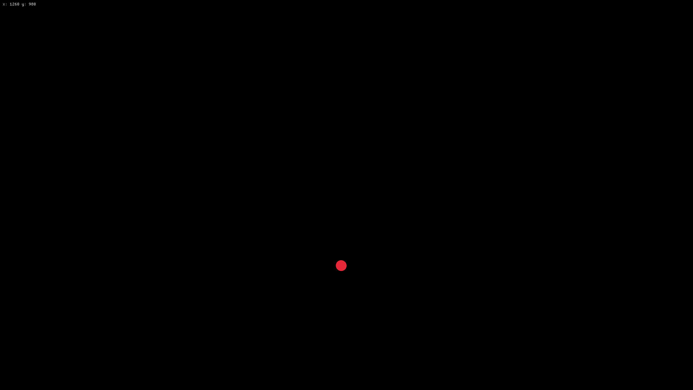

Hello again!
I am currently in ICT class, so I can do (nearly) whatever I want as long as it's related to IT and it's in some way useful. I plan on making a game and compile it to WASM so I can run it on the web so y'all can try it (is there even anyone looking at this?). Anyways, I guess today's not the day for that but I'll give you something in the meantime:
It's basically nothing but you know, it's Rust so that's actually great that it only took me about an afternoon of learning. I haven't done much else since I was looking at my bike (there might actually be some MTB-related content here soon!) and I finally put my new bike lights on there. Am I getting off topic?
Of course I am not, this is a blog not a wikipedia article
I also wanted to install my pedals but I don't have any grease nor a torque wrench (or maybe we do have those at home but I didn't want to bother my dad with it)